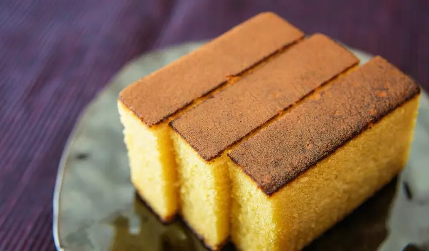

Castella Cake

Description
Ingredients
- 40 grams cake flour
- 35 grams salted butter
- 30 grams whole milk
- 30 grams white granulated sugar
- 2 eggs
- 1/4 teaspoon vanilla extract
- 1/4 teaspoon cream of tartar
Steps
- Crack the eggs into a bowl. Gently separate the egg yolks and egg whites.
- Heat the milk and butter in a small pan. Don't get them boiling, heat them just enough to melt the butter. It should be warm to the touch.
- Sift your cake flour in another bowl. Pour the warm milk-butter mixture in and slowly mix everything using a whisk. It should become pretty sticky and viscous. After that, add the egg yolks and vanilla extract. Continue whisking until it is all well mixed, being careful to avoid air bubbles.
- To create the meringue, whisk your egg whites with cream of tartar and sugar at a high speed until it looks super creamy and fluffy.